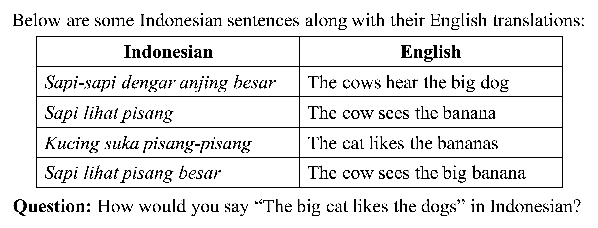

Submitting Problems to NACLO
Quick summary
We welcome submissions of fun, engaging linguistic puzzles to be used in the NACLO contest. You can submit puzzles of any difficulty level and about any language-related topic. If you have a problem idea, please email nacloproblems@gmail.com; you can send us a complete problem submission (ideally including answers and sources), or you can send a rough idea that we will help you develop into a problem.
The rest of this page provides more information about NACLO and about what we look for in problem submissions.
What is NACLO?
NACLO (the North American Computational Linguistics Open competition) is a contest in which high-school students solve linguistic problems. Through solving these problems, students learn about the diversity and consistency of language as well as computational approaches for processing language. No prior knowledge of linguistics, second languages, or computer science is necessary.
To give you a sense of how these problems work, an example is shown below. Note, however, that the problems used in the contest are usually longer and more difficult than this one.
Why should I write a problem for the NACLO contest?
There are several reasons:
- It’s an excellent form of outreach! High schools usually don't have linguistics courses, so for many students NACLO is what first introduces them to linguistics and NLP. Many participants enjoy the contest so much that they are inspired to study linguistics or NLP in college. Even for students who don't pursue linguistics further, NACLO raises awareness about what linguistics is—which is an important service, given that there are many misconceptions about what linguists do (e.g., people often assume that linguistics is about learning to speak many languages).
- It’s a way to give broader impact to your work! If you are a linguist or NLP practitioner, you can consider making a problem based on concepts from your research. This can give your work broader impact by supporting the outreach goals mentioned in the previous point.
- It’s fun! Creating a NACLO problem often feels like solving a puzzle; it involves figuring out how to introduce concepts in an engaging way that gives solvers an aha! moment. Many of our problem writers enjoy this process and come back year after year to write problems for NACLO.
What sorts of problems can be submitted?
In general, we are very flexible. Problem submissions can have any difficulty level and can focus on any area of linguistics or natural language processing. To get a sense for the problems we have used before, you can view prior NACLO contests at this link. However, please don’t feel restricted by what we’ve used before—we welcome creative ideas about new types of problems!
One feature that will make us more likely to accept your problem is if it is fun and engaging, since we aim for NACLO to be enjoyable as well as educational. There are many ways to make a problem engaging:
- You could present the data within an intriguing framing, such as playing a game, cracking a code, deciphering a menu, interpreting an actual piece of literature, or figuring out why a machine is breaking.
- You could make the problem be about some phenomenon that students will find surprising and interesting, such as pronoun systems based on different features than English pronouns or word orders that differ markedly from English word order.
- You could add visual appeal by incorporating engaging images such as maps, non-Roman writing systems, intriguing diagrams, or even clipart images that are not integral to the problem but that still make it more inviting.
- You could include a twist that makes it more like a puzzle and less like a homework problem, such as the famous "one of the fishermen is lying" twist, or a twist involving a single word with multiple English translations.
- You could connect the puzzle to something students themselves can relate to—e.g., writing computational puzzles that connect to language technology that students use.
- You could incorporate humor, such as entertaining narratives, amusing mistakes made by a hypothetical robot, or jokes based on garden-path sentences.
In addition, although we welcome problems of any sort, there are certain types of problems that we are perpetually short on, meaning that we are especially likely to use a submission if it falls into one of these categories:
- Easy problems: We like to have a mix of difficulty levels. We tend to get lots of submissions that are fiendishly tricky—which is wonderful, because we want some problems at this level—but we don’t get many easy submissions. Therefore, please don’t hesitate to submit a puzzle that is very easy, like the Indonesian problem near the top of this page!
- Computational problems: In the contest, we aim for about 20% or 30% of the problems to illustrate concepts from computational linguistics or NLP. We get very few submissions in these areas, so we are likely to accept submissions that do fall in these areas.
- Problems from subfields that aren’t featured often: Most of our submissions (and, consequently, most of the puzzles in the contest) tend to fall within one of the following categories: syntax, morphology, phonology, lexical semantics, writing systems, and number systems. However, there is much more to language than just these areas, so we love to see problem submissions that focus on other subfields, such as phonetics, historical linguistics, sociolinguistics, psycholinguistics, or pragmatics (to be clear, this list is non-exhaustive!). As a bonus, many of these subfields are ones that students can relate to most easily, so if you select one of these areas, that might be an easy way to increase how engaging your problem is!
What should I send you if I want to submit a problem?
If you have drafted a complete problem, you can send that to us in whatever format is convenient (PDF, Microsoft Word, Google Doc, etc.) In addition, it is optional but highly encouraged that you include your answers and sources. See this page for a list of what information is most helpful to include when describing answers and sources.
If you just have a rough idea, we are happy to work with you to translate that idea into a problem! You can email us your idea, and then we can brainstorm with you over email or in a Zoom meeting.
You can send ideas or submissions to nacloproblems@gmail.com.
Is there anything I should avoid in my problem submission?
Here are some common issues. Several of these can be remedied, but it’s even better to avoid these issues in the first place:
- Avoid languages that are too well-known. NACLO puzzles are meant to involve figuring out something about a language you haven’t encountered before, rather than testing your prior knowledge of languages that you speak. Therefore, NACLO problems should not focus on languages that are likely to be spoken by many participants in the contest. This includes languages that are spoken in many households in the US and Canada (e.g., Spanish or Mandarin) as well as languages that are commonly studied in high school (e.g., Latin). If you aren’t sure whether a language is too well-known, please ask us! There are also some situations where it is okay to use a language that students will already know—this is primarily the case for computational problems where the main puzzle is figuring out a computational algorithm, rather than figuring out the structure of a language.
- Avoid problems that require background knowledge. NACLO problems should not require any prior knowledge about linguistics or computer science. E.g., if the problem illustrates a phonological process that turns /b/ to /p/ and that turns /d/ to /t/, we cannot expect students to generalize this to turning /g/ into /k/ because that generalization requires knowledge of phonology. This type of issue can often be addressed by providing the relevant information in the intro to the problem (e.g., providing partial IPA charts).
- Avoid inappropriate examples. The examples used in NACLO problems should not involve topics that are inappropriate for children, such as violence or alcohol. This is important to keep in mind because the example sentences in your source material might incorporate these topics; in such cases, you should not use those examples.
What is the timeline?
You can send us submissions at any point during the year. NACLO runs two contests each year—one at the end of January and one in mid-March. There is no firm cutoff date for a submission to be eligible for a given contest, but as a rough guide submissions should ideally come before December 1 to be considered for the January contest, or before February 1 to be considered for the March contest. However, since NACLO occurs every year, you can send us materials at any point—if it's too late to be considered for this year's contest, we will put it into consideration for next year!
How does NACLO decide which submissions to use in the contest?
Many factors contribute to our decisions. At the level of individual problems, we prioritize submissions that are fun, engaging, and inviting. We also prioritize problems for which we can verify factual accuracy (i.e., are the linguistic phenomena in the problem presented accurately?) and solvability (i.e, is there enough information to solve the problem?); you can help us verify these properties by including answers and sources in your submission.
Second, much of our decision process focuses on the set of problems as a whole. Within a given year's set of problems, we try to have a range of difficulty levels (there should be some very easy problems that basically all participants will solve, and some very hard problems that very few participants will solve). We also aim for the set of problems to cover a diverse range of linguistic subfields as well as a diverse range of language families and geographical regions. This holistic focus means that, when we decide not to use a given submission, it often has nothing to do with that submission having any flaws—the submission may simply be too similar to other problems that are being used that year.
In sum, if you want to maximize the chances that your submission will be used in the contest, you should:
- Make the problem fun, engaging, and inviting.
- Include answers and sources in your submission.
- Try to write problems belonging to categories for which NACLO does not get many submissions (since this reduces the odds that your submission will be too similar to other submissions). As discussed above, some categories where we always need more submissions are easy problems, computational problems, and problems featuring topics outside of the ones that show up most often in NACLO. (The most commonly-submitted categories are syntax, morphology, phonology, lexical semantics, writing systems, and number systems, so anything outside of these topics is excellent for broadening the scope of the contest; e.g., phonetics, historical linguistics, sociolinguistics, psycholinguistics, or pragmatics—and this list is certainly not exhaustive!) To be clear, we also welcome submissions in these more-commonly-submitted categories; it's just that, if you submit problems on one of those topics, you will have more competition from other submissions than if your problem focuses on a less-commonly-submitted area.
What if I have other questions?
Please email us at nacloproblems@gmail.com!